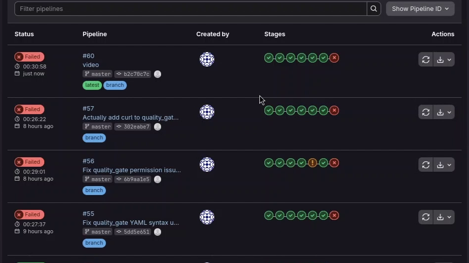
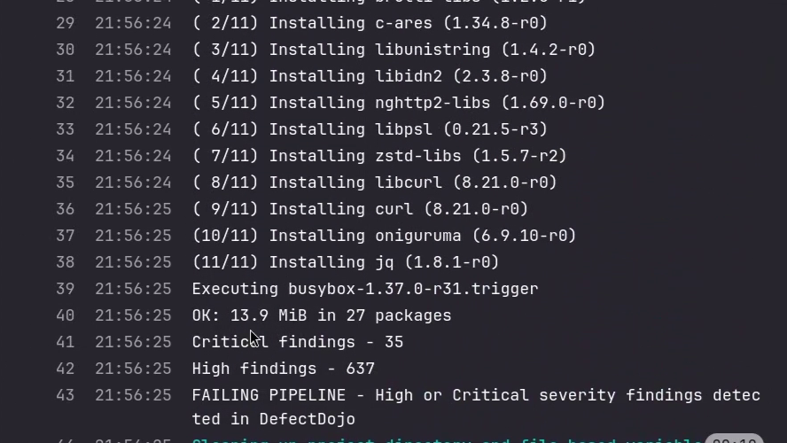

Objective
Put security checks inside the delivery pipeline, so that every push is tested automatically and a build with high or critical findings is stopped.
A GitLab CI pipeline that builds OWASP Juice Shop, scans it five different ways, collects every finding in DefectDojo and refuses to pass while serious ones are open.
Put security checks inside the delivery pipeline, so that every push is tested automatically and a build with high or critical findings is stopped.

The recorded run took about 31 minutes. Six stages passed and the quality gate failed the pipeline, which is what it should do against a deliberately vulnerable application. DefectDojo showed 832 active findings afterwards: 35 critical, 637 high, 150 medium and 10 low.
Those totals add up over repeated runs, because DefectDojo was not removing duplicates. This run moved the total from 663 to 832.

A recording of just under five minutes: the configuration, a live run and the findings in DefectDojo.
Watch on Google Drive